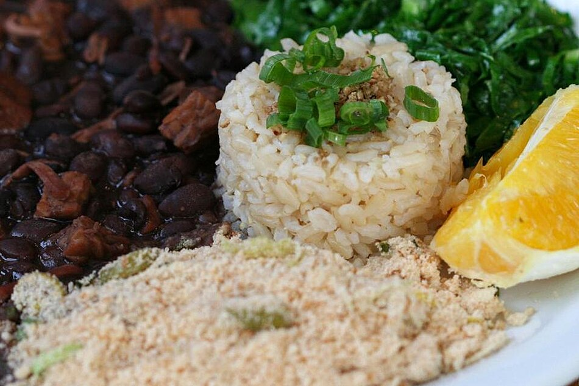

Brazilian Black Bean Stew

A version of feijoada from Northeastern Brazil. Feijoada is a dish made throughout Brazil, and there are many versions, but this recipe is the most common 'day-to-day' version you'll encounter in backyard barbeques and birthday parties in the Northeast.
Ingredients
- ½ (15 ounce) can black beans, rinsed and drained
- 1 onion, diced
- ¼ pound smoked ham, diced
- ¼ pound calabresa (Portuguese smoked sausage), cut into 1/4-inch slices
- 4 cloves garlic, minced, divided
- 1 ½ teaspoons salt
- 1 tablespoon ground cumin
- ½ teaspoon ground black pepper
- 1 bay leaf
- 1 ½ teaspoons olive oil
- 4 leaves collard greens, cut into fine ribbons, or to taste
- 1 ½ cups cassava flour
- 1 ½ teaspoons butter, or to taste
- 4 cups cooked white rice
- 4 oranges, cut in wedges, or as desired
- ¼ cup coarsely chopped cilantro
Steps
- Combine beans, onion, ham, calabresa, 3 cloves garlic, salt, cumin, black pepper, and bay leaf in a pressure cooker; cover with water to fill line.
- Close cooker securely and place pressure regulator over vent according to manufacturer's instructions. Cook at high pressure until regulator is gently rocking, 5 to 7 minutes. Reduce pressure to low. Cook, adding water halfway if needed, until beans are tender and water is reduced to your liking, about 1 hour.
- Turn off heat. Let pressure release naturally according to manufacturer's instructions, about 5 minutes. Unlock lid and remove. Let feijoada cool until ready to serve.
- Heat olive oil in a saucepan over medium-high heat. Saute remaining 1 clove garlic and collard greens until just tender, about 2 minutes.
- Place cassava flour in a skillet over medium-high heat. Cook and stir until toasted, about 3 minutes. Stir in butter.
- Serve feijoada with the collards-garlic mixture, toasted cassava flour, rice, orange wedges, and cilantro.
Cook's Notes
- You can use kielbasa instead of calabresa.
Cooking time may vary by 30 minutes or more, depending on the size of your pressure cooker. If you don't have a pressure cooker, you can use a large covered pot. In this case, it's best if you soak the beans in water overnight after rinsing to reduce cooking time. Cooking time will be significantly longer using this method.
Brazilians use a vegetable called 'couve' in place of the collards. As it is not available in the United States (to my knowledge) and is is almost identical in taste, collards are a reasonable facsimile.
A typical feijoada uses smoked pigs' ears; likewise, this ingredient is not easily obtainable and probably not suited to the American palate. I used smoked ham as the substitute.
Return to Home Page